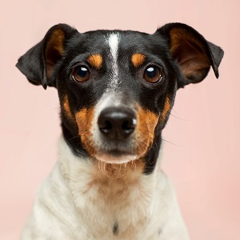

- Bella
- Sexo: Hembra
- Tamaño: Mediano
- Nivel de Actividad: Medio
- Fecha aprox de nacimiento: Enero 2018
- Conoce un poco mi historia:
- ¡Hola, mi nombre es Bella! ¿Sabes por qué me pusieron ese nombre? Pues porque soy super linda y noble. A mi me rescataron con bastantes problemas de piel, pero con mucho cuidado y amor, he logrado recuperarme de a pocos. Ahora ya estoy lista para irme a mi nuevo hogar. Soy una Wuf super cariñosa que siempre busco estar acompañada, por lo que busco una familia que me acompañe por siempre. Además, si me adoptas, vengo con un kit de regalos ¡Anímate!
- Compartelo en las redes sociales
¿COMO ES EL PROCESO DE ADOPCION?
- 1.Elige a tu mascota preferida y envia el formulario de adopcion

- 2.Completa el formulario que te enviamos a tu correo
- 3.Realizaremos un videollamada para conocerte mejor
- 4.Abono para la fundacion
- 5.Tu nuevo amigo llegara a tu casa en un plazo de 5 dias